{kind=link}
{kind=link}
{kind=link}
{kind=link}
{kind=link}
{kind=link}
{kind=link}
{kind=link}
{kind=link}
{kind=link}
{kind=link}
{kind=link}
Introduction
1) Storage in reservoirs, such as earth dams and ponds.
2) Storage in tanks
3) Storage in situ, such as in soil and sand.
Storage in reservoirs
If farmers want to have water during dry seasons, they should 'harvest' it during the annual four months with rain, just like Scandinavian farmers harvest and store sufficient fodder for their livestock during six months of summer to feed their livestock for the 6 winter months when the animals are tied up in stable.
There are many types of structures suitable for surface storage of harvested rainwater but nearly all of them lose water in one way or another, such as:
These, and other, losses of water during storage should be considered when planning designing a water project for either water for domestic user, livestock or irrigation. For example, since about half of the water stored in earth dams will disappear due to evaporation and seepage, the reservoirs should be built to store double the volume of water required.
Storage in Tanks
General guidelines for water storage in tanks
Fresh or purified water can quickly become re-contaminated because:
1) The containers used to store the water are not clean.
2) Unclean things are dipped into the water (this includes hands, clothes, etc.).
3) The water is not covered and so insects, dust or other foreign substances can enter the water.
Storage in Situ
The cheapest method of storing rainwater is to recharge shallow ground water aquifers, also called in situ storage, during rainy seasons and draw the water by means of hand-dug wells throughout the year. However, this cheap method may not always succeed because:
1. The water may seep deep into the underground where it becomes salty and unfit for human consumption
2. The water may be too deep for shallow wells and require investment in expensive boreholes and pumps.
3. The water may not be found in the underground.
Storage of Agricultural Water in Earth Dams
| 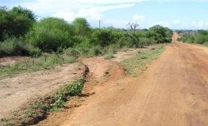 |
| Cut-off drain |
| (c) E. Nissen-Petersen, Kenya
|
Cut-off drains deliver rainwater run-off from roads onto farmland where it sometimes creates erosion and deep gullies. This potentially destructive practice can be changed to a gain for the farmers by diverting the water into ground tanks, small earth dams or land for seasonal irrigation.
| 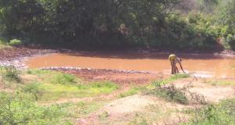 |
| Cut-off drain to a pan |
| (c) E. Nissen-Petersen, Kenya
|
Here a cut-off drain diverts run-off water from a road into a natural and shallow depression on the lower side of a road called a pan. A pan can be made into a pond by deepening the reservoir and place the excavated soil as a dam wall (embankment) with two spillways (overflows) on the lower side of the reservoir. Ponds are small earth dams.
| 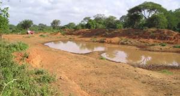 |
| A borrow pit |
| (c) E. Nissen-Petersen, Kenya
|
Where road contractors have excavated murram for road construction and left 'borrow pits' or 'murram pits', these can be converted into pans or ponds by digging a trench to divert water from a road into the pit. Usually these pits have water-tight (impermeable) floors through which water cannot leak into the underground.
| 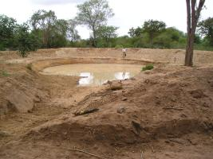 |
| Charco dams |
| (c) E. Nissen-Petersen, Kenya
|
Charco ponds and Charco dams are half-ball shaped (hemi-spherical) excavations where the soil is placed as a dam wall around the excavation, except at the inflow channel which has two spillways for safe discharge of surplus water. Charco ponds and dams are viable in flat land.
| 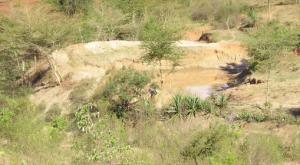 |
| Hillside dam |
| (c) E. Nissen-Petersen, Kenya
|
Hillside ponds/dams have a semi-circular dam wall made of the soil excavated for the water reservoir. A stony spillway is built onto each end of the dam wall. These dams are designed to be constructed on rolling land and hill sides.
| 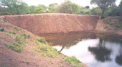 |
| Valley dam |
| (c) E. Nissen-Petersen, Kenya |
Valley dams are straight dam walls built across narrow points in valleys. A wide spillway lined with stones is built at each end of the dam wall to discharge surplus water safely. Due to global warming, many valley dams have been damaged by extraordinarily big thunder storms exceeding the design criteria of the highest rainfall in the last 50 years.
| 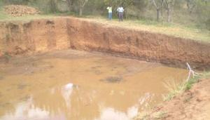 |
| Excavation dams |
| (c) E. Nissen-Petersen, Kenya
|
Excavation dams should be circular or oval excavations where the excavated soil is used for building the dam walls whose sides should slope at least 45 degrees. The excavation dam in the above photo was a waste of money and labour. The sides are too steep and therefore collapsing. The soil is too porous and can therefore not hold any water.
| 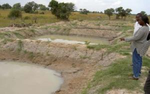 |
| Excavation ponds |
| (c) E. Nissen-Petersen, Kenya
|
The photo above shows a series of well designed and constructed excavation ponds have been filled with run-off water from roads. The embankments should be stabilised with grass.
Storage of Agricultural Water in Ground Tanks
There are two main types of water tanks, namely:
| 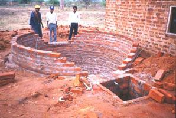 |
| Cylindrical ground tank |
| (c) E. Nissen-Petersen, Kenya
|
This hemi-spherical tank (see image above) built of burnt bricks reinforced with barbed wire and chicken mesh is for roof catchment of domestic water.
| 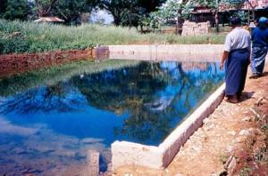 |
| Never design square and rectangular tanks. They will collapse! |
| (c) E. Nissen-Petersen, Kenya
|
This photo shows a rectangular tank for fish farming in Myanmar. Two sides of the tank caved in when the tank was emptied of water due to pressure from the soil.Note: Water tanks should never be designed using square and rectangular shapes because they will collapse due to the uneven pressure of water and soil whether the tanks are full or empty.
| 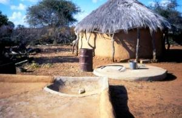 |
| Traditional underground cylindrical water tank in Botswana |
| (c) E. Nissen-Petersen, Kenya
|
A traditional underground cylindrical water tank at a homestead in Botswana from which water is drawn by a bucket tied to a rope. The catchment area for the tank is the threshing floor for millet and sorghum, which is made water repellant with a coat of cow dung. The floor slopes towards a silt trap where a plastic bottle prevents mice and lizards entering the tank.
| 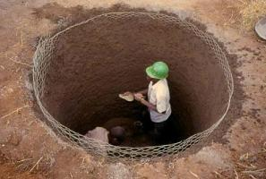 |
| A cylindrical ground tank made of ferro-cement |
| (c) E. Nissen-Petersen, Kenya
|
A simple and cheap ground tank can be made by excavating a cylindrical hole and plastering it with mortar cement onto chicken mesh (Ferro-cement).
| 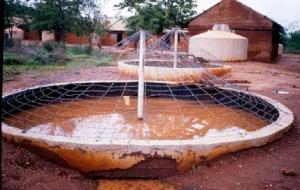 |
| Hemi-spherical ground tanks |
| (c) E. Nissen-Petersen, Kenya
|
A series of two hemi-spherical ground tanks built of burned bricks collect and store run-off water from a school compound for irrigation of a tree nursery and small irrigation garden.A roof catchment tank can be seen at the school building. It provides drinking water for the pupils.
| 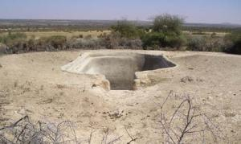 |
| Berkad ground tanks in Somaliland |
| (c) E. Nissen-Petersen, Kenya
|
The berkad ground tanks for watering livestock in Somaliland are banned by the government because of environmental degradation due to over-grazing caused by insufficient fodder. Moreover, most of the rectangular berkads must be repaired every year due pressure from the soil when the tanks are empty.
| 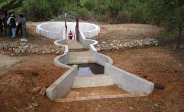 |
| Berkad ground tank in Kenya |
| (c) E. Nissen-Petersen, Kenya
|
In Kenya, the rectangular berkad was redesigned to be oval-shaped and roofed with barbed wire covered with thorny Bougainvillea climbers, two large silt traps and a staircase made of concrete for drawing water by hand in buckets.
| 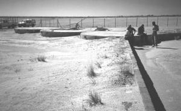 |
| Catchment area in the Kalahari Desert in Botswana |
| (c) E. Nissen-Petersen, Kenya
|
The hard sandy surface of the Kalahari Desert in Botswana is used as catchment area for these three large cylindrical water tanks, which provide domestic water for the San people (Bushmen).
| 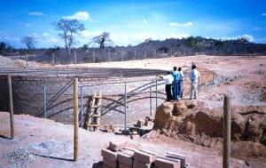 |
| Building a cylindrical water tank in Tanzania |
| (c) E. Nissen-Petersen, Kenya
|
In the dry central plateau of Tanzania, a 500 m3 cylindrical water tank, made of reinforced concrete, was built to collect run-off water from a 2 sq.km catchment area. The water is for domestic use by the communities living nearby.
| 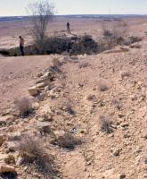 |
| "King David's Well" in the Negev Desert, Israel |
| (c) E. Nissen-Petersen, Kenya
|
Storage of Domestic Water in Tanks
| 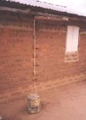 |
| Simple roof catchment |
| (c) E. Nissen-Petersen, Kenya
|
Roof catchments for domestic water can be as cheap and simple as the photo on the left shows. A sheet of metal or of polythene or a length of split Bamboo or Sisal pole is tied to the roof. A rope hangs from the gutter to facilitate rainwater running along the rope into a 20 litres jerry can on the ground.
Plastic jerry cans
| 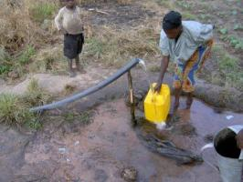 |
| Woman carrying water |
| (c) E. Nissen-Petersen, Kenya
|
| 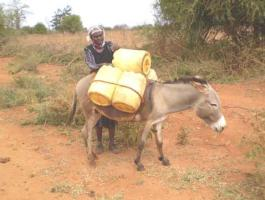 |
| Transporting water home by donkey |
| (c) E. Nissen-Petersen, Kenya
|
| 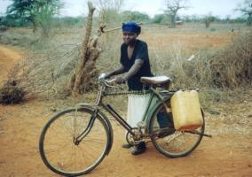 |
| Transporting water with a bicycle |
| (c) E. Nissen-Petersen, Kenya
|
| 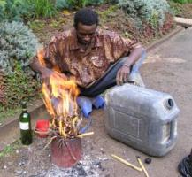 |
| Repairing a jerry-can |
| (c) E. Nissen-Petersen, Kenya
|
Jerry cans are expensive for rural communities, therefore jerry cans have to be repaired when they leak or get worn out.
Should a jerry can be worn out, the leakages and holes in it can be sealed by plastic strips melted over a fire.
Oil drums
Most rural homesteads can afford an oil drum to harvest rainwater from the roof. Unfortunately, the lower part of oil drums corrodes. The oil drums are than discarded as scrap metal.
Note: Rusty and leaking oil drums can easily be repaired for the cost of half a bag of cement. The technique is simple.
| Repaired oil drums |
| (c) E. Nissen-Petersen, Kenya
|
How to repair oil drums:
| 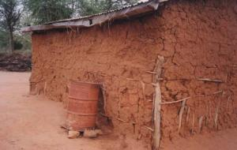 |
| A simple roof catchment system with gutters |
| (c) E. Nissen-Petersen, Kenya
|
The image left shows a slightly larger roof catchment system with gutters fixed sloping along the full side of the roof. A discharged oil-drum with a storage capacity of 210 litres is placed under the lowest point of the gutters where the rainwater will fall from the gutter.
| An oil drum used for roof catchment at a rural home |
| (c) E. Nissen-Petersen, Kenya
|
Types of Water Tanks
Easy ways of building water tanks
How to Repair Water Tanks
Often it is much easier and cheaper to repair old and leaking water tanks and containers than buying or building new ones.
1) Corrugated galvanized iron sheet tanks
| 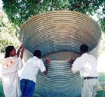 |
| A leaking water tank made of galvanized iron sheets |
| (c) E. Nissen-Petersen, Kenya
|
Water tanks made of galvanized iron sheets were popular some decades ago. Unfortunately, the bottom part of the tanks corroded and leaked after 5 to 10 years. They were then considered useless and discharged as scrap metal. These corroded and leaking water tanks can be repaired easily.
| 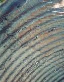 |
| Chicken mesh tied to the interior of a tank |
| (c) E. Nissen-Petersen, Kenya
|
The technique is as follows:
Step 1 Small holes are punched in the wall for every 15 cm or so using a nail and a hammer.
Step 2 Binding wire is cut in lengths of about 20 cm and bent in a U shape. One person puts the two ends of a U bent wire into two punched holes situated near each other.
Step 3 A second person presses chicken mesh against the wall and uses the two ends of the U wire to tie to chicken mesh tightly against the wall. Thereafter chicken mesh is laid on the floor of tank.
Step 4 Cement can now be mixed with clean river sand in a ratio of 1 part cement to 3 parts sand and some water. This mortar is then thrown onto the chicken mesh in a layer of about 1 cm thick.
Step 5 The next day another coat of mortar is added until all binding wires and chicken mesh are covered with mortar. Within the same day, cement slurry (NIL) is pressed onto the moist plaster with a square steel trowel for water proofing. The outside of the tank can be painted with a weatherproof paint made of 1 part cement to 10 parts of lime mixed with water.
 |
| A repaired tank |
| (c) E. Nissen-Petersen, Kenya
|
2) Leakage between wall and foundation
Problem: Many tanks built of masonry leak water through the joint where the wall joins the foundation.
Reason: The reasons are either insufficient reinforcement, poor mixture of mortar or lack of cleanliness when the joint was made.
Remedy: The joint can be made watertight by cleaning the joint, adding more reinforcement and making an apron on both sides of the joint.
Procedure:
Step 1 Drain all water out of the tank and clean the floor and the foundation on the outer side of the tank.
Step 2 Chisel a groove, about 3 cm x 3 cm, all around the joint on both the interior and external sides of the tank.
Step 3 Roughen a 15 cm wide stretch of the foundation on both sides of the joint. Clean the joint and the roughened surface with plenty of water.
Step 3 Wrap 5 rounds of barbed wire tightly around the tank in the external groove.
Step 4 Compact mortar 1:3 into the external and internal grooves with a piece of timber.
Step 5 Compact a 15 cm wide and 10 cm high apron over the external and internal grooves.
| An internal apron can be made with a short length of bamboo or an empty beer bottle. |
| (c) E. Nissen-Petersen, Kenya
|
| 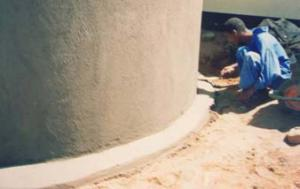 |
| An external apron is made with a wooden trowel. |
| (c) E. Nissen-Petersen, Kenya
|
3) Leakage through a cracked foundation
Problem: Water leaks through cracks in the foundation.
Reason: Soft soil under the foundation, insufficient reinforcement, poor mixture of concrete or improper curing.
Remedy: The leakage can be sealed by constructing a new foundation onto the old cracked foundation.
Procedure:
Step 1 Drain all water out of the tank and clean the floor.
Step 2 Fill all cracks with bitumen paste
Step 3 Cut sheets of weld mesh to fit the foundation. All overlaps must be at least 20 cm and tied together with binding wire for every 10 cm.
Step 4 Mix concrete with 1 part cement to 3 parts river sand and 3 parts of crushed stones (1:3:3). Compact a 7 cm thick layer of concrete onto the old foundation.
Step 5 Lay the weld mesh on the concrete in the tank.
Step 6 Compact a second layer of 7 cm concrete onto the weld mesh in the tank.
Step 7 Compact a 1 cm thick layer of mortar 1:3 onto the concrete. Smoothen the plaster and press a coat of NIL onto the plaster the same day.
Step 8 The next day, compact a rounded apron into the joint between the new foundation and the wall.
Step 9 Keep the foundation moist and under shade for 3 weeks
| 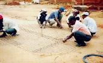 |
| Weld mesh cut to fit foundation. |
| (c) E. Nissen-Petersen, Kenya
|
4) Leakage through walls without cracks
Problem: Water leaks through the wall of a water tank, although the wall has no cracks.
Reason: The wall is leaking due to porosity caused by either a mortar mixture with insufficient cement, insufficient curing or poor workmanship.
Remedy: The wall can be sealed by replacing the porous parts with mortar 1:3 and with NIL. Should the wall still leak after that treatment, the interior of the tank should be coated with a water proofer.
Procedure:
Step 1 Drain all water out of the tank and clean its interior
Step 2 Chisel away the porous parts of the interior wall.
Step 3 Clean the chiseled parts with water and throw dry cement onto the watered parts of the wall.
Step 4 Mix mortar of 1:3 and throw a thin layer of it onto the watered parts of the wall.
Step 5 Step 5 Next day, fill up the coated parts with mortar 1:3 and apply NIL with a square steel trowel. Keep the plastered parts moist under shade for 3 weeks, and then fill the tank with water.
Step 6 Should the tank still leak, its internal side has to be painted with a water proofer, such as swimming pool paint, non-toxic bitumen, oil paint or 1 part of cement with 10 parts of lime mixed with water.
| A newly plastered tank must be cured for three weeks. |
| (c) E. Nissen-Petersen, Kenya
|
5) Leakage through cracked walls
Problem: Water leaks through cracks and fissures in the wall of a water tank.
Reason: Vertical cracks are due to insufficient horizontal reinforcement and/or incorrect joining of bricks and blocks. Horizontal cracks are due to incorrect joining between the horizontal courses between bricks and blocks.
Remedy: Build a new tank on the outside of the cracked tank by wrapping reinforcement mesh or wire around the tank and plaster it.
Procedure:
Step 1 Drain all water out of the tank and clean it.
Step 2 Chisel off any loose part on the external side of the tank wall
Step 3 Tie sheets of weld mesh together with binding wire and wrap them tightly around the tank and plaster the outside of the tank with 3 cm of plaster 1:3. Alternatively, wrap chicken mesh tightly around the cracked tank after which a spiral of barbed wire, gauge 12.5 is wrapped tightly around the chicken mesh with a spacing of 5 cm at the lower half of the tank and 10 cm apart on the upper part of the tank. Thereafter plaster the outside of the tank with 3 cm of plaster 1:3.and keep it moist under shade for 3 weeks.Paint the tank with a weather proof paint made of 1 part cement to 10 parts of lime mixed with water.
| Weld mesh wrapped around a tank. |
| (c) E. Nissen-Petersen, Kenya
|
| 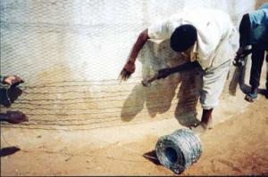 |
| Chicken mesh and barbed wire wrapped around a cracked tank. |
| (c) E. Nissen-Petersen, Kenya
|
Easy Ways of Building Water Tanks
Information sources
- Access to several water management manuals under: www.waterforaridland.com
- Cairncross S. and Feachem R. (1993). Environmental Health Engineering in the Tropics. An Introductory Text. Second Edition. John Wiley & Sons, Chichester.
- De Vrees, L. 1987. Rainwater tank programme. Machakos Diocese, Box 640, Machakos, Kenya.
- Enyatseng, G. 1998. Evaluation of ferrocement water tanks. Botswana Technology Centre, P/Bag 0082, Gaborone, Botswana.
- Gould, J and Nissen-Petersen, E. 1999. Rainwater catchment systems for domestic supply. Intermediate Technology Publications, London, UK.
- Gould, J. 195. Development in rainwater catchment systems in eastern and southern Africa. 7th IRSA Conference, Beijing China.
- Gould, J. 1987. Assessment of roof and ground catchment systems in Botswana. 3rd IRSA Conference, Khon Kaen University, Thailand.
- Gould, J. 1991. Rainwater catchment systems for household water supply. ENSIC Review, A.I.T. Bangkok, Thailand.
- Gould, J. 1998. Review of recent developments in rainwater catchment systems technology in eastern and southern Africa. Science, Vol. 16, No.1.
- Hasse, R. 1989. Rainwater Reservoirs above ground structures for roof catchments. GATE, Germany.
- Lee, M. and Nissen-Petersen, E. 1989. The use of low-cost self-help rainwater harvesting systems for community water supply in southern Kenya. 4th IRCA Conference, Manila, Philippines.
- Lee, M. and Visschers, J.T. 1990. Water harvesting in five African countries. IRC, The Hague, Netherlands.
- Nissen-Petersen, E. 1982. Rain catchment and water supply in rural Africa. Hodder & Stoughton, London, UK.
- Nissen-Petersen, E. 1990. Water tanks with guttering and hand-pump. Manual No. 1 of Harvesting Rainwater in Semi-arid Africa. Danida, Kenya
- Nissen-Petersen, E. 1992. How to an underground tank with domes. ASALCON, Kenya.
- Nissen-Petersen, E. 1992. How to build cylindrical tanks with domes. ASALCON, Kenya.
- Nissen-Petersen, E. 1992. How to build smaller water tanks and jars. ASALCON, Kenya.
- Nissen-Petersen, E. 1992. How to make and install gutters with splash-guard. ASALCON, Kenya.
- Nissen-Petersen, E. 1992. How to repair various types of water tanks. ASALCON, Kenya.
- Vukasin H. L., Roos L., Spicer N., Davies M. (1995). Production without Destruction. Natural Farming Network. Zimbabwe.
- Wagner E. G. and Lanoix J. N. (1959). Water supply for rural areas and small communities. Monograph series No. 42. World Health Organization. Geneva.
- Watt, S. 1978. Ferrocement water tanks and their construction. ITDG London, UK